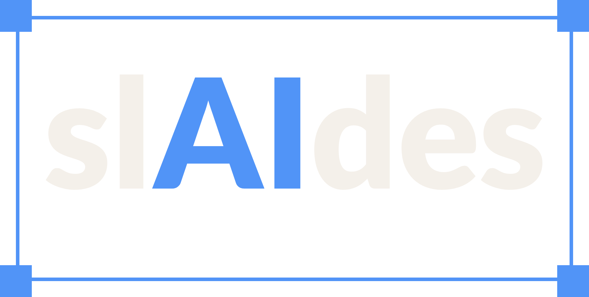
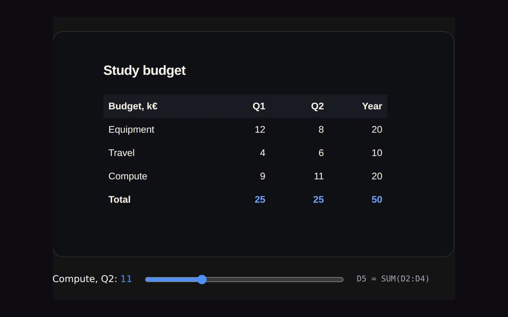
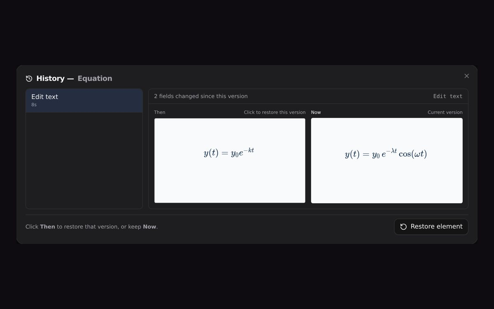
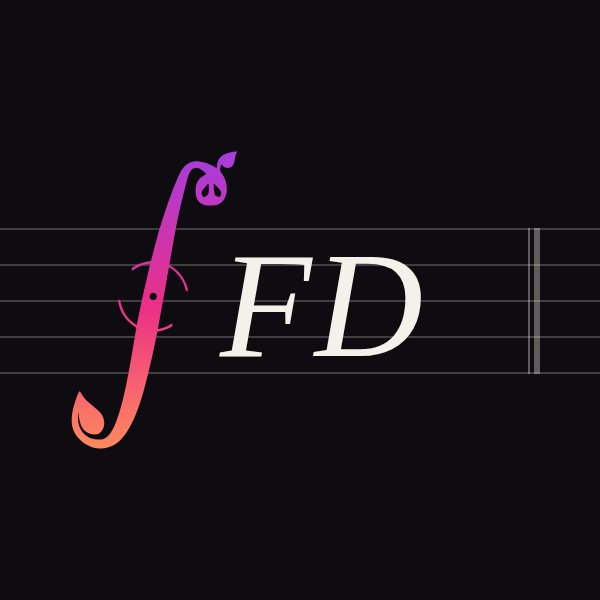

Sovereign AI for expert work.
We build local models that stay with the people and companies who own the knowledge, and software made natively for them, so the expert keeps the data, the model and the decision.
Our editor has two users. Only one has hands.
The AI gets a toolbox of checked operations, not a brush.Your knowledge should not have to leave home to be useful.
Today, using AI in expert work means sending your data, drafts and know-how to someone else's model. We think experts and companies should be able to run that intelligence themselves, on their own terms.
-
01 · Models
Local models In development
Models that run where your data lives and are tuned to your field, so what you know stays yours.
-
02 · Software
Native software
Tools designed for those models from the start: typed, checkable operations instead of prompts that produce pictures. An equation stays an equation; a chart keeps its data.
-
03 · Judgment
The expert decides
Every change is visible, revisioned and reversible. The machine proposes; the person who has to defend the result has the last word.
slAIdes works with the assistant you already use, through MCP.
The same software, running on models you can host.
Tuned on your data, on your machines. The software is built for it.

Technical talks where LaTeX stays LaTeX.
Equations, charts, tables and figures stay native objects that you and your AI assistant can edit. Every change is a revision you can inspect and undo.
- Live equations. Edit the LaTeX, the slide follows.
- Charts keep their data. Fix the number, not the picture.
- Tables do the maths. SUM, AVERAGE, MIN, MAX.
- miniME. Turns a paper into an editable talk.
- Undo one element. Not the whole file.
- Exports. PDF, PPTX and PNG.
$1.99 per month



EasyPlotter: figures you can rerun.
A figure is a recipe of typed commands, not a one-off script. It reads your simulation and lab data, exports publication figures, and sends charts to slAIdes with the data still attached.
Your files
VTK HDF5 CSV NumPy Excel, read where they live.
Typed commands
Every step of the figure is recorded and can be rerun on new data.
Publication output
PNG, or the matplotlib and pgfplots code behind it.
Native chart in slAIdes
Pasted with its data, so the talk and the paper never drift apart.
Mama's Brain on Substack.
Essays on expertise, AI and sovereignty: what the machine gets right, what it gets wrong, and how to design for the expert who has to defend the result.
Two researchers at KTH, Stockholm.
We build the tools we needed for our own research in fluid mechanics and AI. Bootstrapped, and honest about being early: slAIdes is live and charging, EasyPlotter and the local models are in development.

Francesco Mario D'Afiero
Co-founder · PhD researcher, KTH
Pilots, research groups and collaborations.
If your team presents technical work, or has knowledge that should not leave the building, we would like to hear from you.